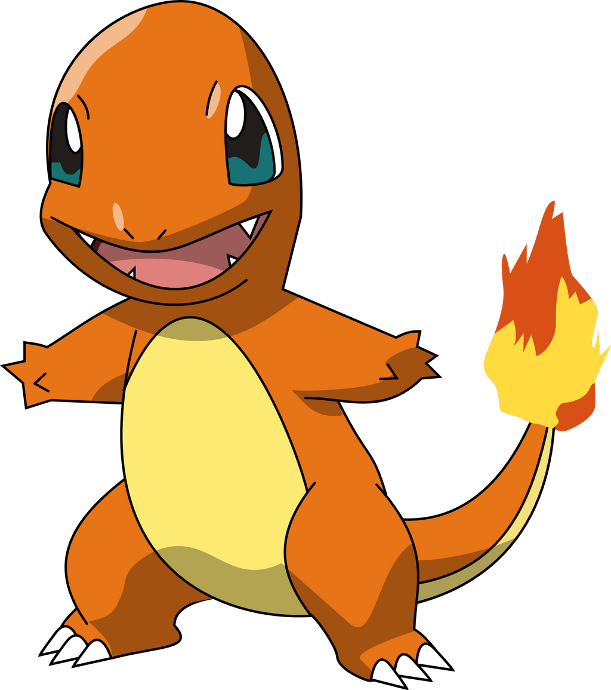

Explora el mundo Pokemón!
Pickachu Ver Más
Ver Más
Cuando se enfada, este Pokémon descarga la energía que almacena en el interior de las bolsas de las mejillas. |
CharmanderLa llama de su cola indica su fuerza vital. Si está débil, la llama arderá más tenue. |
Bulbasaur
Tras nacer, crece alimentándose durante un tiempo de los nutrientes que contiene el bulbo de su lomo. |
Regiones
Kanto

La región de Kanto es la primera región en la que los jugadores pueden aventurarse en los juegos de Pokémon. Está inspirada en la región de Kanto en Japón y presenta una variedad de ciudades, pueblos y rutas para explorar.
Johto

La región de Johto es la segunda región en la serie de juegos de Pokémon. Está inspirada en la región de Kansai en Japón y presenta una mezcla de ciudades modernas y áreas rurales, así como una rica historia y tradiciones.
Ventajas elementales Pokemón
| Elemento | Ventaja |
|---|---|
| Fuego | Agua, Tierra, Roca |
| Agua | Planta, Tierra |
| Planta | Tierra, Roca, Agua |
Noticias

Prepárate para demostrar tu resolución durante el evento final de la temporada más reciente de Pokémon GO: Historias de Transformación. Has estado cultivando tus lazos con Keldeo durante toda la temporada, y muy pronto podrás cambiar al Pokémon Potro a su Forma Brío por primera vez. El evento El Espadachín final, que tendrá lugar del martes 25 de noviembre a las 10:00 a. m. al domingo 30 de noviembre de 2025 a las 8:00 p. m. en tu hora local, llegará con la esperada conclusión de la historia de Investigación Especial de la temporada, cuando podrás cambiar la forma de Keldeo usando 50 Caramelos Keldeo y enseñándole Espada Sagrada.
Sitio Oficial